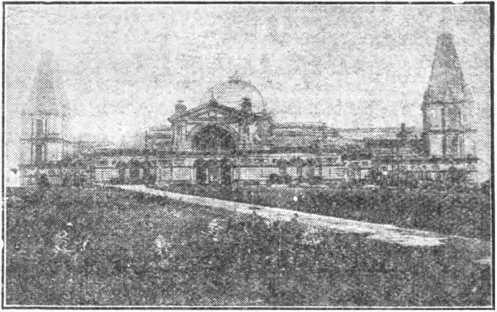

Upon the earth distress of nations with perplexity; the sea and the waves (the restle&s, discontented) roaring; men’s hearts failing them for fear and for Inn Icing to the things coming upon the earth (society); for the powers of the heavens (ecclesiast^esm) shall be shaken . . When ye see these things begin to come to pass, then know that the Kingdom of God V* it hand. Look up, lift up your heads, rejoice, for your redemption draweth nigh.—Matt. 24:33; Mark 13:29; Luke 21:25-3L
THIS JCU2NAL AND ITS SACRED MISSION
Tina jonzBal to one at the-prime factors or instruments' la the eystsa of Bible Instruction, or “Seminary Extension", now Mmt prmented In all parts ut the mrilised wotM by the Warczr Town Bums & Twice Soctmr, chartered A. D. 1884, “For the Promt at Christian Knowledge”. It not only serves as a class rows where Bible students war aseet Br the study nt. the ■ s Word bat «ii«n as a channel of conunnalcatiun. tiiromffi which they may be reached with announcemestx of the Society's enmrentiaiie and at the typing of Its traveling zeprsaentatives, styled “Pilgzims”, and wtfnwtwrt- with reports of Its convention*.
Our “Berean Leeoows" are topical rehearsals or reviews, of our Society’s published Srunixs most entstahdagty arranged, oot very helpful to all who would merit the only honorary degree which the Society accords, til, Terbi Dei JfaUster (V. D, IL), which tzaoaiiled into English is Btnwicr of God’s Word. Our treatment of the International Sunday School Lessons is specially for the older Bible students and teachers. By-some this feature is considered, indtapenaabiet
This journal stands firmly for the defense of the only true foundation of the Christian’s hope now being so generally repudiated —redemption through the precious blood of “the <">" Christ Jesus, who gave himself a ransom (a corresponding price, a-substiaitej for all”. (1 Peter 1:19; 1 Timothy 2: C) Building up on this sure foundation the gold, silver and precious stones <1 Corinthian; 3: 1115; 2 Peter Ft 5-11) of the Word of God, Its further mission is to “make all see what is the fellowship of the mystery which - . -baa been hid in God, ... to the intent that now might be made known by the chureh the manifold wisdom- of God”—“which in other-ages-tias sot made known unto the sons of men as it is now revealed”.—Ephesians 3 : 5 9,10.
It stands free from all parties, sects and creeds of men, while it seeks more and more to bring its every utteiance into fullest subjection to the will of God in Christ, as expressed in the holy Scriptures. It is thus free to declare boldly whatsoever the Lord hath spoken—according to the divine wisdom granted unto us to understand his utterances. Its attitude is not dogmatie, but confident; for we know whereof we affirm, treading with implicit faith upon the sure promises of God. It is held as a trust, to be used only in his service: hence our decisions relative to what may and what may not appear in its columns must be according to our judgment of his good pleasure, the teaching of his Word, for the upbuilding of his people in grace and knowledge. And we not only invite but urge our readers to prove all its utterances by the infallible Word to which reference is constantly made to facilitate such testing.
TO US THE SCRIPTURES CLEARLY TEACH
That the church is “the temple of the living Go-1”, peculiarly "his workmanship"; that its construction has been in progress throughout the gospel age—ever since Christ became the world’s Redeemer and the Chief Corner Stone of his temple, through which, when finished, God's blessing shall come “to all people”, and they find access to him.—1 Corinthians 3 : 1G, 17 ; Ephesians 2:20-22; Genesis 2b : 14 ; Galatians 3 : 29.
That meantime the chiseling, shaping, and polishing of consecrated believers in Christ's atonement for sin, progresses; and when the last of these ‘living stones”, “elect and precious,” shall have been made ready, the great Master Workman will bring all together in the first resurrection: and the temple shall be filled with bls glory, and be the meeting place between Godrandmen throughout the Millennium.—Revelation 15 : 5-8.
That the basis of hope, for the church and the world, lies in the fact that “Jesus Christ, by the grace of God, tasted death for every man.” “a ransom for all," and will be “the true fight which lighteth every man thet comcth into the world", “in doe time".— Hebrews 2:9; John 1 : 9 ; 1 Timothy 2 -. 5, 6.
That the hope of the church is that she may bo like her Lord, “see him as he is,” be “partakers of the divine nature',' and share his glory as his joint-heir—1 John 3:2; John 17:24; Romans »• : 17 ; 2 Peter 1:4.
That the present mission of the church is the perfecting of the saints for the future -work of service; to develop in-herself every grace: to be God's witness to the world ; and to prepare to be kings and priests in the next age—Ephesians 4:12; Matthew 24: 14 ; Revelation 1: C ; 29:6.
That the hope for the world lies in the blessings of knowledge and opportunity to be brought to aU by Christ's Millennial kingdom, the restitution of all that was lost in Adam, to all the willing nnd olxxlicut. at the hanus or their Redeemer and his glorified church, when all the wilfully wicked will be destroyed.—Acts 3 : 19-23; Isaiah 35.
■Published iv
WATCH TOWER. BIBLE & TRACT SOCIETY
18 CONCORD STREET on BROOKLYN, NX, U S A-
Foreign Offices: British: 34 Craven Terrace, Lancaster Gate, London W. 2; Canadian; 38-40 Irwin Avenue, Toronto, Ontario; Australasian; 495 Collins St.. Melbourne, Australia; South African; 6 Lelie St., Cape Town, South Africa.
Please Address the society in Every Case.
YEAJILY SUBSC11IPTIOX PK1CL'; Lnitcd States. S1.00: Canada AND Ml.sCELLAM.UL> I'UKLIGN. Nl.50 : GREAT BRITAIN. AUSTRALASIA, and Sorin AiiucA. 7». Aineiic.in remittance* should bo made by Express or Postal Money Orders, or bv Ban1: Dratt, Canadian. British, SouthAfrican. and Australasian remiuanets should be made to branch offices oh I if. Remittances from scattered toi eign territory may be made to the Brooklyn ollice. but by international Postal Money Orders only. (Forewi। translattons of this journal appear tn several Ittnmiaffcs)
Editorial Committee.- This journal is published under the supervision of an ednoriai committee. at least three of whom have read and approved as truth each and every article appearing in these columns. The names of the editorial committee are: J. F. Rutherford. W. E. Van Amddrgh, J. IIemery, R. 11. Bauder. E. J.
Terms to the L/Ord's Poor: All Bible students who. by reason of old age ui older inlirnuty or adversity, are unable to pay for this journal, u ill be supplied tree if they send a postal card each May stating their case nnd requesting such provision. We are not only willing, but anxious, that nil such be on our list continually ana in touch with the Berean studies. ______
notice to Stibscnbers: We do not, ns a rale, send a card of acknowledgment for a renewal or for n new subscription. Receipt and entry of renewal are indicated within a month by change ifi expiration date, as shown on wrapper label.______________________________
Enrma as Second Class Matter at Brooklyn, N.Y. Poitotfice-. Aft of March rd
COMFORT FOR THE JEWS
The Society is now publishing a book especially dealing with the return of the Jews to Palestine. It was written by the President of the Society. A campaign is now beginning to get this message to the Jews. All the consecrated will desire to have a part in this work. Apply to your Service Director immediately for service. This seems to be tlie Lord's due time to give such a message.—Isaiah 40:9.
ENCOURAGEMENT FOR WORKERS
From May to December, 1925, the Bethel Family used their spare time on Saturdays for field work. In that time the Family distributed 230,000 free tracts and sold 32277 volumes of books. Cuu you find some time on Saturdays to canvass?—Romans 12:1.
The above shows the Alexandra Palace, the place for th< London Convention. May 24th to 31st, 1926, Inclusive. There is ample provision for meetings with a recreation park in the front It will he an Ideal place for a convention. American brethren who contemplate attending this convention will please notify the Brooklyn office during January if possible.
MEMORIAL DATE
The nearest new moon to the equinox 1926 Is March 14th, Jerusalem time. The fourteenth day thereafter would end March 28th. about six p, m_ which marks the true begin-ins of tlie Passover. Therefore, Saturday evening, March 27th. 1926. after six o’clock, is the proper time for the celebration of the Memorial.
Vol. XLVII January 15, 1926 No. 2
"Lord, teach us to pray.”—Luke 11:1.
WITH many prayer is merely a formality. With others it is a mockery. Some pray to bo heard of men. A few pray with a sincere desire to have the will of God done concerning them. Such was evidently the reason why the disciples of Jesus requested him to teach them how to pray. If it were necessary for the disciples of Jesus to learn how to pray, surely it is necessary for all to learn how to pray intelligently who expect to have their prayers answered.
2 One of the greatest privileges the Christian enjoys is that of prayer to God. Offered in harmony with the Word of God, and with confidence in God and in his Word, an answer may be confidently expected. Not every one has the privilege of prayer. One’s privilege may differ at different times. It is therefore important to have an understanding of the subject matter as outlined in the Word of God that we may understand who has the privilege of prayer and under what circumstances.
3 Prayer is a petition asking for relief or favor. If intelligently made, it is addressed to one possessing the power and ability to grant the relief or favor desired. A comprehensive definition of prayer therefore is: A petition asking for relief or favor addressed to a being or creature possessing the power or authority to grant such relief or favor. God is all-powerful; he possesses the power and authority to grant relief. Therefore a petition addressed to Jehovah, according to his will as expressed in his Word, may receive a favorable consideration.
4 Many of the peoples of earth address their prayers to stones or to statues of wood or to other inanimate objects. Some turn wheels and count that as prayer, while others count beads and repeat formal phrases and believe that this is prayer to God. Such prayers are worse than useless. They are never answered. Many prostrate themselves in an attitude of devotion before images of wood or stone, or before some inanimate object in the form of a cross, believing that the presence of such object will aid them in their prayers. Such prayers are offered without a proper understanding of the Scriptures. The people who offer these prayers arc not to be blamed; and what is here said is not said for the purpose of ridicule, but that the attention of seekers for truth may be directed to the privilege of praying to God, the Giver of every good and perfect gift.
WHO MAY PRAY
5 Do not all persons have the privilege of approaching God in prayer? They have not. People may pray, but with no assurance of having their prayers answered. The Apostle Peter, under inspiration, wrote: “For the eyes of the Lord are over the righteous, and his ears are open unto their prayers: but the face of the Lord is against them that do evil.” (1 Peter 3:12) By this authority it is seen that only the righteous have the privilege of prayer. Such may present their petitions to God and expect to be heard and answered according to his holy will.
6 Does not the sinner have the privilege of prayer ? If one who is a sinner, going in the way of sin, repents and is converted, which means to change his mind and his course of action, and desires the mercy of God, he may call upon God for mercy; and if he follows God’s appointed way he may come into harmony with God and later enjoy the privilege of prayer. An example of a sinner praying to God is found in the Scriptures (Luke 18:13): “And the publican, standing afar off, would not lift up so much as his eyes unto heaven, but smote upon his breast, saying, God be merciful to me a sinner.” It will be observed, however, that he had not the full privilege of prayer. The Scriptures show rhat it is only the child of God who can approach him and address him as Father, and expect to receive an answer to his prayer.
7 Who are righteous, and how does one become righteous? The psalmist says (Psalm 14:3): “They are all gone aside, they are all together become filthy; there is none that doeth good, no, not one.” Again the psalmist declares that all were born in sin and shapen in iniquity. (Psalm 51:5) This is corroborated by the Apostle Paul’s statement in Romans 5:12: “Wherefore, as by one man sin entered the world, and death by sin; and so death passed upon all men, for that all have sinned.” All are born sinners, but the Lord God has provided a way for sinners to return to him. Faith is the first thing essential. “But without faith
it is impossible to please him: for he that cometh to God must believe that he is, and that he is a rewarder of them that diligently seek him.”—Hebrews 11: 6.
8 Abraham is called the “father of the faithful”. Because of his faith God counted him as righteous. This is proven by the words of St. Paul in Romans 4: 20-22: “He staggered not at the promise of God through unbelief ; but was strong in faith, giving glory to God; and being fully persuaded that, what he had promised, he was able also to perform. And therefore it was imputed to him for righteousness.” Abraham had the privilege of prayer to God because he was a friend of God, being so considered by reason of his faith and obedience.—■ James 2: 23; Isaiah 41: 8; 2 Chronicles 20: 7.
9 Likewise Isaac and Jacob and others of the prophets had the privilege of prayer. God made a covenant with the people of Israel; and as long as that people tried to keep that covenant they had the privilege of praying to God; and he heard their prayers. Abraham prayed unto God. (Genesis 20:17) When the people cried unto Moses, Moses prayed unto the Lord. (Numbers 11: 2) When the Israelites were afflicted by serpents they went to Moses and asked him to pray to the Lord; and Moses prayed for the people and the Lord heard his prayer. (Numbers 21: 6-8) Hannah had no son and was in bitterness of soul; but she prayed unto the Lord and she bore a son and called his name Samuel She committed her son unto the Lord’s care.—1 Samuel 1: 9-20.
10 These and many like instances which appear in the Bible show that the people of Israel enjoyed the privilege of praying to God because that nation was in a covenant with God through Moses as mediator. Israel is designated in the Scriptures as the house of servants. With them God’s law covenant operated as a friend or pedagogue to lead them to Christ. When Christ came, those of the nation of Israel who accepted him as the Anointed One were transferred from the house of servants to the house of sons; and as members of the house of sons they were granted the privilege of prayer.
HOUSE OF SONS
11 Moses was the head of the house of servants, and that house had a limited privilege of prayer to God. That house was typical of the house of sons. Jesus Christ is the head of the house of sons. (Hebrews 3: 5, 6) “And Moses verily was faithful in all his house, as a servant, for a testimony of those things which were to be spoken after; but Christ as a son over his own house; whose house are we, if we hold fast the confidence and the rejoicing of the hope firm unto the end.” Sons of God have the privilege of addressing the Father. The Lord Jesus often prayed, addressing Jehovah God as Father. The disciples of John had the privilege of praying, as the servants of God; but they did not understand how to pray as the followers of Christ.
HOW ONE BECOMES A SON
12 In John 14:6 it is written: “Jesus saith unto him, I am the way, and the truth, and the life: no man cometh unto the Father, but by me.” Thus it is seen that after the coming of Christ not even a Jew could come to God except through Christ Jesus; because Christ Jesus is the Son of God, and he is the way that God has provided whereby all shall come to him and into harmony with him. In Matthew 16 : 24 Jesus said: “If any man will come after me, let him deny himself, and take up his cross, and follow me.” The steps therefore to become a son of God are as follows: (1) Faith in Jehovah as-the great eternal God; (2) faith in the Lord Jesus as the Redeemer of mankind, that his shed blood provided the ransom price; then (3) a full consecration to do God’s holy will. Consecration to the Lord means that we, in substance, say to Jehovah that having faith in him and in tjre Lord Jesus Christ we agree to do the will of God, trusting in the merit of Jesus’ sacrifice.
13 The next step is justification, which means to be made right with God. Those who are justified by faith through the blood of Christ are no longer aliens from God but have peace with him, as St. Paul states in Romans 5:1: “Therefore being justified by faith, we have peace with God through our Lord Jesus Christ.” Justification is in fact a judicial determination by Jehovah that the one who makes a consecration is right with him. These three things must follow in the order named: (1) The exercise of faith by making a consecration, (2) imputation of the merit of Christ Jesus, and (3) the judicial determination by Jehovah. Hence it is written in the Scriptures that by faith are we justified (Romans 5:1), by the blood of Jesus are we justified (Romans .5: 9), and also that it is God that justifies. (Romans 8: 33) Justification is for the purpose of enabling one to sacrifice his right to human life and be begotten to the divine nature. Justification therefore is an invitation to the high calling.
14 Then such an one is begotten by Jehovah, by his holy spirit, as recorded in James 1:18: “Of his own will begat he us with the word of truth, that we should be a kind of firstfruits of his creatures”; and in 1 Peter 1: 3, 4: “Blessed be the God and Father of our Lord Jesus Christ, which according to his abundant mercy hath begotten us again unto a lively hope by the resurrection of Jesus Christ from the dead, to an inheritance incorruptible, and undefiled, and that fadeth not away, reserved in heaven for you.” Begetting means the beginning. This marks the coming into Christ. The apostle says in Romans 8:1, 14,15: “There is, therefore, now no condemnation to them which are in Christ Jesus, who walk not after the flesh, but after the spirit, . . . For as many as are led by the spirit of God, they are the sons of God. For ye have not received the spirit of bondage again to fear; but ye have received the spirit of adoption, whereby we cry, Abba, Father.” Thus it is seen that such have the privilege of addressing Jehovah as Father, and these are they who have the privilege of prayer as the sons of God.
15 Can a Mohammedan or other heathen pray to God and expect relief? The answer is: No; because such do not believe in the Lord Jesus Christ as the great Redeemer of man and the way of coming to God. Why is it necessary to believe on the Lord Jesus Christ as the Redeemer? Because all the human family became sinners by reason of Adam’s disobedience to God. God provided for the death of his beloved Son that through the merit of that sacrifice Adam and his offspring might be relieved from the effects of the judgment of condemnation. God does not force this privilege upon any one but grants it only to those who come and ask, as sinners, that they might be relieved of their difficulties and come into harmony with him through Christ. It follows then that if anyone comes in any other way except through Christ he would not be received. The Scriptures leave no doubt about this. We read in Acts 4: 12: “For there is none other name under heaven given among men, whereby we must be saved.”
10 What then shall we say about Modernists ? Tl>e Modernist clergymen in particular say that they do not believe that man fell because of sin, nor do they even believe that God created man, but claim that man is a creature of evolution, and that man is gradually evolving. They say that they do not believe that the blood of Jesus was shed as a redemptive price for man; hence they have no faith in the ransom sacrifice. These often stand in a public place and pray; do they have the privilege of prayer, or are their prayers heard ? We can judge this only by the Scriptures; and when the Scriptures plainly say that no man can come unto God except through Christ Jesus, then it follows conclusively that any man who believes neither in the fall of Adam nor in the redemptive price, and hence denies Christ Jesus as the great Redeemer, has no privilege whatsoever of prayer.
17 Does this mean that doctors of divinity, who class themselves as Modernists and are such, and who pray in public, never have their prayers hoard? It could mean nothing else. The prayer of such in public or otherwise is a mockery. Do not these have the privilege of prayer at least to the same extent as do sinners? This question can be answered by an instance recorded in the Scriptures.
18 In Jcsus’ time there were clergymen who claimed to represent God. In Luke 18:10-14 -we read: “Two men went up into the temple to pray; the one one a Pharisee, and the other a publican. The Pharisee stood and prayed thus with himself: God, I thank thee that I am not as other men are, extortioners, unjust, adulterers, or even as this publican. I fast twice in the week,
I give tithes of all that I possess. And the publicin, standing afar off, would not lift up so much as his eyes unto heaven, but smote upon his breast, saying, God be merciful to me a sinner. I tell you, this man went down to his house justified rather than the other: for every one that exalteth himself shall be abased; and he that humbleth himself shall be exalted.”
PLACE OF PRAYER
19 In Jesus’ day the ecclesiastical element, particularly the scribes and the Pharisees, who claimed to represent God, took much pleasure in walking on the streets in long robes and in appearing in the synagogues in such and receiving greetings, and in occupying the chief rooms at the feasts. They also delighted to display their piety by standing in the synagogues and on the street comers in prayer. Jesus said that these were hypocrites, that they were praying to be seen of men, and that they had their reward, because men might see them and say: How wonderfully pious are these men!
20 After 1800 and more years this class of men have not passed from the earth but rather they have increased in numbers. The words of Jesus (Luke 20: 46,47) seem now quite appropriate: “Beware of the scribes, which desire to walk in long robes, and love greetings in the markets, and the highest seats in the synagogues, and the chief rooms at feasts; which devour widows’ houses, and for a show make long prayers: +he same shall receive greater conuemnation.” “And when thou prayest, thou shalt not be as the hypocrites are: for they love to pray standing in the synagogues and in the corners of the streets, that they may be seen of men. Verily I say unto you, They have their reward.”—Matthew 6 : 5.
21 There is a time and a place for everything. God does not judge one according to the place where he prays, but judges him according to his purpose and intent. If his prayer is uttered in a public place that others might hear and remark upon the piety of the one praying, then such a one may receive the reward of commendation of others; but he does not receive the approval of God. There are certain conditions in which it would be proper to pray in public. Where there is a public assembly of Christian people for the purpose of holding public worship it would be entirely appropriate for the leader, or some consecrated Christian in the presence of all, to act as the spokesman to give expression of thanksgiving to God for his manifold blessings and to ask his guidance in the consideration of the matters in which the assembly is to participate.
22 It should be remembered always that prayer is offered not to the people but to Jehovah God. Only God can grant the answer to prayer. If therefore there is a thing in which a public assembly of the consecrated is equally and jointly interested, and if all desire to ask the same thing, it would be proper then for one to utter audibly this prayer that the minds of all might be guided in unison. Where there is a mixed audience, ®r many present who do not believe the Lord, then if the ©ne serving desires to pray it would be far better for him and more in keeping with the Scriptures if he ■hould pray privately.
23 Thanksgiving means to give expression of gratitude for favors and blessings received. It is proper for all people to express their gratitude to the Giver of every ^ood and perfect gift. For a leader of a public assembly, however, to stand up before the people and tell Jehovah God what he is expected to do, is not only presumptuous but often blasphemous. Long prayers uttered in the presence of others are generally uttered for the purpose of attracting attention to the speaker. We may be sure that Jehovah does not hear and answer such prayers. Ofttimes the leader prays because he loves to hear his own voice and that others might comment upon his eloquence.
34 The Lord Jesus left no doubt as to where the Christian should pray. He said: “But thou, when thou prayest, enter into thy closet, and when thou hast shut thy door, pray to thy Father which is in secret; and thy Father, which seeth in secret, shall reward thee openly.” (Matthew 6:6) If you desire a special favor at the hands of some earthly ruler, you would not wish to call a public assembly of the people and loudly announce in their presence your requests addressed to the ruler. You would prefer to have a secret audience with him that you might present your matter in a better and more direct way. Since prayers are addressed to Jehovah, the effectual prayer is that petition which is secretly presented to Jehovah God in the name of Jesus Christ.
25 Shortly after Jesus had been baptized in the Jordan he desired to pray to God before the selecting of the twelve whom he should use as his apostles. Be it noted that he did not stand up to pray before the multitude. It is recorded of him: “And it came to pass in those days, that he went out into a mountain to pray, and continued all night in prayer to God. And when it was day, he called unto him his disciples: and of them he chose twelve, whom also he named apostles.” —Luke 6:12,13.
26 It was not unusual for the Lord Jesus to withdraw to a secret place for prayer. He did not utter prayers for the benefit of the multitude, that they might hear him. Concerning this we read: “And when he had sent the multitudes away, he went up into a mountain apart to pray: and when the evening was come, he was there alone.” (Matthew 14:23) He held sweet and precious communion with his. Father in heaven by means of prayer. This is true of each true and faithful follower of the Lord Jesus. To all such prayer is a sacred privilege.
27 If it becomes necessary or fitting to pray in public no one who is a true Christian would hesitate to do this. The point is that it seems more appropriate for a child of God who has a petition to present to his Father to> do so secretly, or else in company with others of like precious faith that the mind of each one may be solemnly set upon the thing that they ask in the name of the Master.
LONG PRAYERS
28 Is there any virtue in a long prayer ? Or might we expect the Lord to surely hear and answer our prayer if we repeated it time and time again? Many good, honest people are told that if they will repeat their prayers so many times a day, and count the number by going over their beads, this will result to them in many blessings. Undoubtedly they are honest in their endeavors, but the trouble is that they are not advised as to what the teaching of the Scriptures is upon the point. Jesus, when instructing his disciples to prav, said: “But when ye pray, use not vain repetitions, as the heathen do: for they think that they shall be heard for their much speaking. Be not ye therefore like unto them: for your Father knoweth what things ye have need of before ye ask him.”—Matthew 6: 7,8.
29 It is not necessary to tell the all-wise Creator, time and time again, our heart’s desire. As the Lord here stated, our Father knows in advance what things we have need of. The question then may arise, Why ask him at all if he knows in advance what we need ? The answer to that is this: Jehovah is a just, wise and loving God. He does not force anything upon another. He wishes his children to learn certain lessons and to express themselves in full harmony with his will, and to earnestly desire his blessings before he bestows them. Any good parent can see the wisdom of this course. If he wishes to properly train his child he will prefer to see the child first request a thing that is desired; then, if his wisdom leads him to believe that the child is in need of it, he takes delight in giving it. Jesus lays down the rule when he says: “And I say unto you, Ask, and it shall be given you; seek, and ye shall find; knock, and it shall be opened unto you. For every one that asketh receiveth; and he that seeketh findeth; and to him that knocketh it shall be opened.”—Luke 11:9, 10.
TO WHOM SHOULD WE PRAY?
30 As hereinbefore stated, the Jews prayed to God because they were servants of God under the terms of the law covenant. The Christian is directed to pray to Jehovah God and to address him as Father. Only those who are the sons of God have this privilege. The Lord Jesus lays down the rule definitely, in John 15: 16. that the petition must be presented in his name: “Yre have not chosen me, but I have chosen you, and ordained you, that ye should go and bring forth fruit, and that your fruit should remain: that whatsoever ye shall ask of the Father in my name, he may give it you.” Again he said, in J ohn 14:6: “I am the way, and the truth, and the life: no man cometh unto the Father, but by me.”
S1 This fixes the rule, then, as to who can come to God and to whom the Christian must present his petition or prayer. Necessarily it excludes unbelievers and also those who claim to be Christians but who deny God’s’ Word and his plan of redemption. It cannot be said that because a man poses before the public as a minister or preacher he has the privilege of praying to God. He may or he may not have. When the Lord Jesus was on earth the scribes and the Pharisees were the most zealous of all in claiming to represent God. Without doubt their prayers were not heard by Jehovah, for the reason that Jesus said of and concerning them: “If God were your Father, ye would love me: for I proceeded forth and came from God; neither came I of myself, but he sent me. Why do ye not understand my speech? even because ye cannot hear my word. Ye are of your father the devil, and the lusts of your father ye will do. He was a murderer from the beginning, and abode not in the truth, because there is no truth in him. When he speaketh a lie, he speaketh of his own: for he is a liar, and the father of it.”— John 8: 42-44.
REVERENCE
12 Some pray in an arrogant manner. Others pray with arrogant words. If a man were being received into the presence of some earthly potentate he would approach that ruler with due respect and consideration. When one desires to be received into the presence of Jehovah God, surely at least as much consideration and respect should be shown as if he were being presented to an earthly king. Quite often an expression like this is boldly uttered: “We come into thy presence, Jehovah God.” Not only is this grating and abrupt, but it sounds presumptuous. It would be more in keeping with the happy relationship between the child of God and the heavenly Father if he should say something like this: “Humbly and reverently, gracious God, I beseech thee to receive me into thy holy presence in the name of thy beloved Son, my Redeemer, Christ Jesus.”
33 This does not mean that prayer should always be couched in the same words or become a mere form. It does not seem that the frequent repetitions of forms could be pleasing to the Lord. The Psalmist David gives an instance of reverentially approaching the throne of heavenly grace when he says: “Bless the Lord, 0 my soul. 0 Lord my God, thou art very great; thou art clothed with honour and majesty. Who coverest thyself with light as with a garment: who stretchest out the heavens like a curtain.” (Psalm 104:1,2) “0 come, let us worship and bow down: let us kneel before the Lord our maker.” (Psalm 95: 6) No man can approach God in prayer and expect to be heard unless he has first learned of his own insignificance, and that the Lord is infinitely superior, and that God is perfect in wisdom, justice, love and power.
24 Would it not be proper to pray to Jesus? This would not be improper for a Christian to do, because Jehovah God has committed to Jesus all power in heaven and in earth. But the Lord Jesus himself directed the Christian that when he prays he should say: “Our Father who art in heaven”; and that then he should ask in the name of Jesus the beloved Son of God. He says: “If ye abide in me, and my words abide in you, ye shall ask what ye will, and it shall be done unto you.” (John 15: 7) By this we understand that the Christian alone has the privilege here mentioned. He must be in Christ, in this, that he has been begotten and anointed of the holy spirit and now is a new creature; and he who abides in that blessed condition and the Word of God abides in him, then he shall ask what he will and it shall be done unto him.
35 But mark the conditions. If the Word of God abides in him then the Christian will ask only in harmony with the will of God and not ask something contrary to God’s expressed will. (John 14:13,14) “And whatsoever ye shall ask in my name, that will I do, that the Father may be glorified in the Son. If ye shall ask any thing in my name, I will do it.” By this text, then, we see that it is proper for the child of God to address his prayer to Jehovah, the Father, and in the name of the Son, Christ Jesus.
36 Would it be proper then for a Christian to pray to God that a sinner be converted and brought into the church? The answer is, No; for the reason that the church is the body of Christ. God himself is selecting the members of the body of Christ. It would not be proper to ask him to select some one who was not inclined toward the Lord. But some one might have a loved member of his family that he wanted to become a Christian. Would not it be proper for him to pray for such an one to become a Christian? It would not. It would be proper for him to pray that his beloved friend might have brought to his attention such a knowledge of God’s truth that he might turn his heart to the Lord, but it is for the Lord himself to make the selection of those who are his. We must remember that God is not trying to convert the world. The whole work of the past nineteen hundred years has merely been to preach the gospel that those who desire to follow the Lord might do so. Now the message is going forth that the people might have a knowledge that God’s kingdom is at hand, to the end that they might voluntarily turn their minds to the Lord and worship and serve him.
37 It was not until three and one-half years after the resurrection of our Lord that the way was open for Gentiles to be followers in the Master’s footsteps. It is written: “There was a certain man in Caesarea, called Cornelius, a centurion of the band called the Italian band, a devout man, and one that feared God with all hii house, which gave much alms to the people, and prayed to God alway.” (Acts 10:1, 2) Here was a man who was devout, but the Lord waited his own good time to hear this man’s prayer. The Lord then sent to Cornelius a messenger who said: “Thy prayers and thine alms are come up for a memorial before God.” (Acts 10: 4) Undoubtedly Cornelius had consecrated himself to God by agreeing to do Jehovah’s will, and now the time had come when he should receive a blessing.
38 The Lord God therefore sent Peter to Cornelius; and when Peter appeared before Cornelius it is written (Acts 10: 34-36) : “Then Peter opened his mouth, and said, Of a truth I perceive that God is no respecter of persons: but in every nation he that feareth him, and worketh righteousness, is accepted with him. The word which God sent unto the children of Israel, preaching peace by Jesus Christ: (he is Lord of all).” Then Peter proceeded to tell him of the divine plan, and Cornelius became a Christian. He was the first Gentile that had this privilege. Since then every Gentile who has taken a similar course of seeking the Lord has found him; provided, of course, his seeking was diligent, in honesty and in truth.
A MODEL PRAYER
39 Now what is the proper method for Christians to use in praying? This answer should be found in the Scriptures and nowhere else. “And it came to pass, that as he was praying in a certain place, when he ceased, one of his disciples said unto him, Lord, teach us to pray, as John also taught his disciples.” (Luke 11:1) Jesus answered, “After this manner therefore pray ye: Our Father which art in heaven, Hallowed be thy name.” (Matthew 6:9) It is observed that here he directed that the prayer shall be addressed to Jehovah God, who shall be addressed as Father. This does not mean the fatherhood of God to all mankind nor the brotherhood of all men, as some men have foolishly taught. Jehovah God is the Father to those only who have been begotten by his spirit, and this after a full consecration to do his will.
40 These sons of God are the ones addressed by St. Peter in 2 Peter 1: 2-4 : “Grace and peace be multiplied unto yon through the knowledge of God, and of Jesus our Lord, according as his divine power hath given unto us all things that pertain unto life and godliness, through the knowledge of him that hath called us to glory and virtue: whereby are given unto us exceeding great and precious promises; that by these ye might be partakers of the divine nature, having escaped the corruption that is in the world through lust.” These are the same ones mentioned by St. John in 1 John 3:1, 2: “Behold, what manner of love the Father hath bestowed upon us, that we should be called the sons of God: therefore the world knoweth us not, because it knew him not. Beloved, now are we the sons of God; and it doth not yet appear what we shall be: but we know that, when he shall appear, we shall be like him: for we shall see him as he is.”
41 Of necessity this rule of prayer excludes all those who are not sons of God. The petitioner, after thus addressing Jehovah, acknowledges him as the great eternal God, that his name is sacred, and that he is worthy to receive all praise and adoration. It shows marked reverence on behalf of the Christian for the great Jehovah. There is nothing about it that would warrant the conclusion that the petitioner may irreverently rush into the presence of the Almighty. How different this from what we often hear—some persons publicly praying and arrogantly telling God what he should do I
THE KINGDOM
42 “Thy kingdom come. Thy will be done in earth as in heaven.” This expression means that the petitioner expresses himself in full harmony with God’s holy will, that he des'-es the coming of God’s kingdom, that this kingdom may rule in the earth to the end that the will of God might be done in the earth and in heaven alike. The petitioner recognizes the injustice, sickness and sorrow in the earth, and that the kingdom of God is the only relief for this; and thus he expresses his humble, sincere desire to see God’s will operating in the hearts of all the peoples of earth instead of that which now controls selfish men.
43 It is not an uncommon thing to hear clergymen say that the present kingdoms of this earth are here by divine right and that therefore they represent God. This is directly contrary to what Jesus said. When he stood before Pilate he declared: “My kingdom is not ef this world.” (John 18:36) The reason why he said this was that for a long period of time Satan had b >en the god of this world. Jesus was teaching his disciples to keep their hearts in harmony with himself, and to patiently wait and pray for the coming time when the kingdom of God should be established and when the will of God should be done here. It expresses a hope that in God’s due time his kingdom will be established for the benefit of mankind.
44 The presumption is that the one who thus prays seeks to ascertain the will of God by studying his Word; and that from the Word of God he sees that in God’s due time Christ shall take charge of the affairs in earth, that he will bind Satan that he may deceive the nations no more, and that he will establish peace and righteousness amongst men that they may be brought back into harmony with him. This has really been the desire of the true and faithful Christian throughout the age. He has properly not been praying to God to convert the world, because he knows from the Word of God that it is not yet God’s time to do this. He has been praying that God’s will and plan should be carried out, and he knew from God’s Word that his plan is to establish his kingdom amongst men. For this reason the true Christian is zealous in telling other people about that kingdom, that they might have a hope of relief from present sufferings and learn about the blessings that will come through the ministration of that kingdom.
45 The King James Version of the text reads: “Thy will be done in earth as it is in heaven.” Some have taken exception to the statement heretofore made in The Watch Tower to the effect that Satan has been in heaven during the Gospel Age, and they cite these words in the text above quoted. They have therefore objected to the article “The Birth of The Nation” on the ground that if the will of God is done in heaven Satan could not be there. If by the word “heaven”, as here used, is meant the council of Jehovah, then of course God’s will has always been done in his court. But we cannot invariably limit the word heaven to the throne of Jehovah. There has been rebellion in the invisible as well as in the visible realm. When the time came to put the rebellious ones out God sent forth the rod out of Zion, with the order and authority to “rule . . . in the midst of thine enemies”. (Psalm 110:2) Whichever construction we may place upon the words of the Master in this prayer it does not at all militate against the thought that Satan was in heaven, and has now been expelled from heaven; or that this expulsion took place in or immediately after 1914.
46 We know that for centuries Satan has been the god of this world (2 Corinthians 4:3,4), and that the world constitutes the evil heavens and the evil earth. The Apostle Peter says: “Nevertheless we, according to his promise, look for new heavens and a new earth, wherein dwelleth righteousness.” (2 Peter 3:13) It follows then that the old heaven is the Devil’s and is therefore evil. The Devil has now been cast out of heaven. The Lord Jesus has assumed his power and reigns. The next act is to expel Satan from the earth; and then there will be a new heaven and a new earth; and in it the Lord will establish righteousness.
47 “Give us this day our daily bread.” This means both literal food and the things upon which it is necessary to feed the mind. The Christian is a new creature in Christ. A creature consists of mind, will, heart and organism. The organism of the new creature is flesh and blood, like that of other men. This organism requires daily food for sustenance. It is entirely proper that the son should request those things of the Father, because it is the will of God that his children should ask and receive that which is for their good. The Christian properly does not ask that he be given houses and lands and factories and great quantities of money; but he asks his Father to provide his daily needs; and he asks in confidence, because Jehovah God has promised that his little ones shall not suffer for the things that are necessary.—Psalm 37: 25.
48 It is therefore entirely proper for the child of God to daily ask his heavenly Father to provide for him food and raiment that may be necessary, to the end that he might serve the Lord. This of course implies that he will be thankful for what he does receive, and he will delight each day to express his thanksgiving both by word and by action. The child of God grows as he feeds his mind upon the precious things of the divine plan. He has a command from the Lord to be not conformed to this world but to be transformed by the renewing of the mind. (Romans 12: 2) This means that the child of God will study the Bible, God’s Word; and as he studies he will ask the heavenly Father to feed him upon the precious things thereof that in due time he may have a vision or a clearer understanding of his great truths.
49 Every true child of God has experienced this blessed privilege. As he studies the Lord’s Word, confidently trusting in him, the Lord leads him into wider fields of understanding and fulfils to him his precious promise: “The path of the just is as the shining light, that shineth more and more unto the perfect day.” (Proverbs 4:18) The Lord Jesus said concerning the new creature: “Man shall not live by bread alone, but by every word of God.” (Luke 4:4) The Christian therefore properly will be asking for the things needful for his development as a Christian in harmony with God’s will. Jesus then proceeds in the model prayer thus:
A SEARCHING TEST
s° "Forgive us our trespasses as we forgive those who trespass against us.” This is a searching test for the Christian. If some one has done him an injury and he feels resentment and refuses to forgive such an one, he cannot conscientiously approach Jehovah God in prayer and ask to be forgiven. This teaches the Christian to be merciful and kind and to look upon the afflictions of his fellow creatures with sympathy and to be willing to forgive whenever forgiveness is asked. If we are not willing to thus forgive we cannot expect our Lord to forgive us. We have to come to the Lord frequently for forgiveness, acknowledging our shortcomings.
51 St. Peter asked Jesus how often he should forgive an offender. It is written in Matthew 18: 21, 22 : “Then came Peter to him, and said, Lord, how oft shall my brother sin against me, and I forgive him? till seven times? Jesus saith unto him, I say not unto thee, Until seven times; but, Until seventy times seven.” This really means that we should never refuse to forgive an offender where that offender asks for forgiveness. Our Lord and Master stands as the Advocate of the Christian ; and while this is no warrant for a Christian to do a wrong, if he does commit a wrong he has the privilege of going to God in prayer and asking help. (1 John 2:1,2) He should cultivate the disposition of doing the same toward his fellow creatures. The prayer continues :
TEMPTATION
62 “Lead us not into temptation, but deliver us from evil.” God does not lead anyone into temptation. (James 1: 13) The King James Version does not here give a clear rendering. Other translations read: “Abandon us not in temptation, but deliver us from the evil one.”
63 We observe that when the Lord Jesus had made a consecration and had spent forty days in the mountain, then the Devil was permitted to tempt him. (Luke 4: 1-4) He was therefore put to a test as to whether or not he would prove his loyalty and faithfulness to God under the test. He withstood the test and proved his faithfulness. The Apostle Peter tells us, in 1 Peter 2:21: “For even hereunto were ye called: because Christ also suffered for us, leaving us an example, that ye should follow his steps.” In corroboration of this St. Paul declares: “For whom the Lord loveth he chasteneth, and scourgeth every son whom he receiveth.” (Hebrews 12: 6, 7) Chastisement here means to discipline or test. The test must come to each one that he may have the opportunity to prove his faithfulness to God.
64 Concerning those who are faithful under the test it is written, in James 1:12: “Blessed is the man that endureth temptation: for when he is tried, he shall receive the crown of life, which the Lord hath promis' d to them that love him.” God does not tempt any man, but he permits the test to be put before man; and the Christian is to pray that the Lord God will not abandon him in that test but that he will sustain him; and he may have faith and confidence that the Lord will deliver him. This is really a time of temptation. Concerning the Christian’s privilege in time of temptation the apostle writes: “Seeing then that we have a great high priest, that is passed into the heavens, Jesus the Son of God, let us hold fast our profession. For we have not an high priest which cannot be touched with the feeling of our infirmities; but was in all points tempted like as we are, yet without sin. Let us therefore come boldly unto the throne of grace, that we may obtain mercy, and find grace to help in time of need.”— Hebrews 4:14-16.
65 The words in the prayer above quoted, “For thine is the kingdom, and the power, and the glory, for ever,” are not in the older manuscripts. These are an interpolation; and evidently this was done at the instigation of Satan to aid his emissaries to foist upon the people the thought that the kingdoms of this earth belong to God. It is inconsistent with the first part of the prayer: “Thy kingdom come.” The time has come, however, when the Lord is assuming his power and beginning his reign. Still it is proper for the Christian to continue this prayer until Satan is ousted completely and God’s will is done in the earth.
5G Jesus appreciated the privilege and value of prayer. The record tells of his repeatedly going into a secret place to pray and sometimes all night. His disciples saw the importance of praying aright, and asked him to teach them to pray. He did teach them, and the lessons which he taught to them apply with equal force to all of his followers. The Christian should daily keep near the Lord that the way of communication by prayer may always be open between him and his Father, through the Lord and Savior Jesus Christ, his Head, Redeemer and King.
QUESTIONS FOR BEREAN STUDY
Why did the disciples ask Jesus how to pray? Does everybody have the privilege of prayer? fl 1,2.
What is prayer, and how is it generally regarded by “Christendom” and heathendom ? fl 3, 4.
Who may pray to God and be heard? Are sinners heard if they pray? fl 5, 6.
Who are ilghteous? Was Abraham righteous, and did he have the privilege of prayer? fl 7, 8.
Mention other Old Testament characters whose petitions were heard by Jehovah. Were all the house of servants privileged to pray to God? fl 9-11.
How may one become a son of God? Define consecration and justification. Which takes place first? fl 12-14.
Do Modernists have any more right to pray to God than do Mohammedans? If not, why? fl 15,16.
Do not such have as much privilege of prayer as do acknowledged sinners? Cite an instance in point, fl 17,18. How do Pharisees, ancient and modern, seek reward in prayer? fl 19,20.
Where and how should Christians pray? fl 21,22,24.
What is thanksgiving? How is public thanks to God often made a mockery? fl 23.
Wiiat noble examples concerning prayer did Jesus give us? Is public prayer appropriate? fl 25-27.
Should prayers be long, formal and indefinitely repeated? What did Jesus say about this? If God already knows our needs, why pray at all? fl 28,29.
To whom should our prayers be addressed? fl 30,31,34.
In what attitude should we approach the Lord in prayer? What improprieties are often committed along this line? fl 32,33,41.
Will all proper prayers be answered? For what should we pray? Should we pray that sinners; or friends or relatives be brought into Christ? fl 34-36.
How did the prayers of Cornelius “come up for a memorial before God”? fl 37,38.
Does the opening sentence of the “Lord’s prayer” support the idea of the fatherhood of God and the brotherhood of man as commonly taught? How have St. Peter and St. John identified the sons of God? fl 39,40.
'If Christendom already exists, should Christians then pray, “Thy kingdom come”? fl 42-44.
If Satan remained in heaven until 1914, how shall we explain the clause: “Thy will be done in earth as it is in heaven”? fl 45,46.
What is meant by “daily bread”? fl 47-49.
What searching test does this prayer impose upon the petitioner? fl 50, 51.
Does God ever lead us into temptation? Explain, fl 52-54. What purpose was probably back of the interpolation:
“For thine is the kingdom and the power and the glory forever”? fl 55.
What is the value of prayer to the Christian? fl 56.
TEXT FOR FEBRUARY 3
“For the Lord hath chosen Zion . . . for his hdbita-tation."—Psalm 132:13.
HE word here rendered “habitation” really means an assembly place or seat of government. After the deflection at Eden Jehovah began the develop
ment of his plan to redeem and reconcile man to himself. For the instruction of man he first had a typical seat of government at Jerusalem. He chose the descendants of Abraham; and these, as a people, dwelt in Egypt. They were typical of God’s real people, who have long been in the evil world, of which Egypt was a type- .
The Israelites were organized into a nation or government. Moses was their leader. Moses was a type of Christ, the great Head of the real government. When we speak of the people we have more particular reference to the multitude or aggregation of persons, but when we speak of the nation we have particular reference to the organized government made up of certain classes of the people. The latter is the official element or governing factors. The Israelites were God’s people long before the coming of Moses to deliver them. They began to take form as a nation or organization at the death of Jacob when he, addressing his sons, recognized them as heads of the organized tribes. Later their organization took on a more specific form of government. The people thus organized were properly spoken of as the nation of Israel.
God laid the foundation of his real government when he chose Jesus his beloved Son as the chief stone or foundation. (Isaiah 28: 16) The new antitypical Governor or King was chosen and anointed many years before he began to function in an official capacity. He must wait his Father’s due time before beginning action in his official or governmental capacity; and the beginning of such action or functioning marks the birth of the nation or official government or kingdom, because that is the time when the rod is sent forth out of Zion, when its ruler acts officially.—Psalm 110: 2.
The prophet assumes a position at the time of the birth of the nation, and as the mouthpiece of Jehovah says: “The Lord hath chosen Zion: he hath desired it for his habitation.” It did not please God to choose the angels of heaven; but he chose the man Jesus, and called out other men and justified them and chose them to be associates with his beloved Son. These he organizes into a seat of government for the purpose of assembling there and bringing back into harmony with himself the human family. It is his meeting place.
When the angels of heaven had some intimation that such organization was the plan of Jehovah they had a keen desire to know about it. (1 Peter 1:12) God did not confer this honor upon angels, but he selected from amongst men those who had the faith like unto Abra-
ham for membership in this organization. (Hebrews 2:16) No greater honor could be conferred upon a creature than this. No wonder each one who ultimately is to be of that government must be thoroughly tested I God gives these an opportunity while in the flesh to prove loyalty, faithfulness and love to him. As the light increases, the responsibility of those selected increases and they are put to the severe test. Those who stand the test and appreciate their privilege delight to have part in fulfilling the prophecy expressed; “Blessed be the Lord out of Zion.”
TEXT FOR FEBRUARY 10
“My ki.ng upon my holy hill of Zion."—Psalm 2:6.
HIS statement of the prophet as the mouthpiece of God could not have a fulfilment prior to the time when the King takes his power and reigns, which time we understand to have begun in 1914. Was not Christ Jesus exercising his power as king from the time of his ascension until 1914? The Scriptures show that when he ascended on high the Lord Jehovah said to him: “Sit thou at my right hand, until I make thine enemies thy footstool.” When that time arrived, “the Lord [Jehovah] shall send the rod [sceptre, or the right to rule] of thy strength out of Zion.” (Psalm 110:1,2) That would correspond to the time of the fulfilment of Psalm 2:6. It is in this day, after the Lord takes his power, that the faithful ones of his followers willingly participate in the kingdom work. This corresponds with the time immediately following the birth of the nation. (Psalm 110: 3) It corresponds again with the words of the prophet: “I will also clothe her priests with salvation: and her saints shall shout aloud for joy. There will I make the horn of David to bud: I have ordained a lamp for mine anointed. His enemies will I clothe with shame; but upon himself shall his crown flourish.”—Psalm 132: 16-18.
It is corroborated by the prophecy of Isaiah 61; 10. The priests are those who are anointed and who are willingly and joyfully participating in being God’s witnesses. These scriptures make the position of the truly consecrated so clear that the entire situation is really thrilling.
Tho most momentous event that has transpired in centuries is now progressing; and the anointed ones, clothed with the robe of righteousness, as witnesses for the Lord are permitted to proclaim the message of glad tidings to the world and to thereby lift up the standard of the Lord and point the people to the way which brings to them complete and everlasting relief. These are pointing to the fact that Jesus Christ the King has been placed upon his throne by Jehovah. Let all the saints with joy say now: ‘^Blessed be the Lord cut of Zion.”
-—■—February 14—John 10:1-5,11-16—■—■
“Z am the good shepherd: the good shepherd layeth down his life for the sheep.”—John 10:11. R. V.
IN THE current studies from John’s Gospel we have had the sayings of Jesus, (1) that he had the water of life to give (John 4:10), (2) that he was the bread of life (John 6:48), and that he was the light of the world (John 8: 12). Now in the parable of the true shepherd we have Jesus showing himself caring for his Father’s sheep, and saying of himself, “I am the good shepherd.”—John 10: 14.
2 The parable is related to the incident of the healing of the man born blind; for John closely associates it with our Lord’s concluding words to the Pharisees at that time. By their action in that incident these leaders in Israel exposed their perversity and wickedness of spirit, and it became necessary for Jesus to note it openly. He said openly that he had come for judgment as well as with blessing, that some might be made blind, as well as that some might be given sight; and by the Parable of the Good Shepherd he proceeded to show the motives of these people. Professing to be shepherds and caretakers, they were robbers of God’s flock.
3 Taking the familiar illustration of the sheepfold Jesus reminded them that the shepherd always went openly to the door of the fold, and that he who got into the sheepfold over the fence was evidently a thief and a robber. The porter who had the care of the sheep knew the shepherd and opened to him. The sheep also knew their shepherd; and when he would have them out, he called and they followed him; but a stranger the sheep would not follow, because they did not know his voice.
4 John says that our Lord’s hearers did not understand his meaning. (John 10: 6) Without stopping to explain Jesus went on with his illustration. Changing the picture somewhat he now said: “I am the door of the sheep.” (John 10: 7) When he spoke of the shepherd going to the door and being admitted by the porter, he had referred to himself. Now he says that he is the door of the fold. None can get entrance or exit except by him; but if any man will enter into covenant relationship with God by him, that one shall be saved and shall find pasture.—John 10: 9.
5 Jesus again spoke of thieves and robbers, this time not of fence climbers, but of some who had preceded him, professing care of the sheep. Of these he said: “All that ever came before me are thieves and robbers.” —John 10:8.
6 It has been suggested that the sheepfold of the parable was the Law Covenant, because by it Israel was separated from other peoples. It is comparatively easy to take that connection because Paul says that by the Law Covenant Israel was under a bondage. (See Galatians 4:25) The Law Covenant was a wall of division which separated Israel from all other peoples, but Israel’s covenant does not appear to be intended by the Lord.
7 We suggest that to say the fold was the covenantcare of God is more correct and harmonious. When Jesus came to Israel there were many who cared little for the covenant which God had made with their forefathers at Sinai, except indeed as they might use its forms and ceremonies for their pleasure or to their advantage. Israel as a people could hardly be considered God’s sheep in his fold; there were more goats than sheep among them. But there were some who, like Simeon, were “waiting for the consolation of Israel”.—Luke 2: 25, 38.
8 The manifestation of the angels in the fields at Bethlehem to the shepherds thirty years before, and the strange incidents connected with the birth of John the Baptist (Luke 1:65, 66), brought many into a state of expectant waiting on God. And when John began his mission, Luke says that there were many who believed that unusual things were then to be expected. (Luke 3: 15) It seems fitting to consider these waiting ones as the sheep waiting for the shepherd.
8 Though the New Testament is silent as to any comparison between the profession and hypocrisies of the leaders of Israel of Jesus’ day and of the generation immediately preceding it, there seems no reason for doubting that when Jesus was ministering these had reached a culminating point. They were at the height of their outward show of their profession of serving God. No doubt the expectancy in the people helped to that end; for those men would try to get advantage for themselves. They would make even greater profession so as to get the confidence of the people. It was to these Jesus made reference when he spoke of some climbing the fences to get amongst God’s sheep, and of others as going before him pretending to the sheep that they were the God-appointed shepherds. The Lord said the sheep had not recognized their voice; they had declined to follow the call.
10 Jesus certainly spoke of false shepherds of his own day. He said: “All that ever came before me are thieves and robbers.” (John 10:8) When the true shepherd appeared, the porter knew him and opened the door of the sheepfold to him. John the Baptist was surely the porter at the door. He was the herald, telling of the coming of the shepherd; and the sheep, the loyal-hearted towards God who were in expectation of the coming of the shepherd (See Luke 3:15), heard his voice and knew him. Andrew said to Peter: “We have found the Messiah” (John 1:41); Nathanael said to Jesus: “Rabbi, thou art the Son of God; thou art the King of Israel.”—John 1: 49.
11 When Jesus spoke the parable he could tell of a little company of faithful “sheep” who saw in him the hope of Israel, and who had been led out by him into green pastures. To them the Shepherd was indeed the one sent of God. The Pharisees, who had set themselves to lead the people, had never had a voice which could warm the hearts of those who waited for the hope of Isra:l. Nothing that they could say could touch the hearts of such as John and Peter and Andrew and Nathanael; but with the coming of Jesus these saw and felt the power of God in him. Nor had the Pharisees any introduction from God to the people of Israel as Jesus had; they were self-appointed leaders.
12 Israel ought to have been suspicious of men who set themselves up as leaders. The Lord had no hesitation in giving these men their true names. They were thieves and robbers—thieves because they deceived the people, depriving them of their rights and property; robbers because sometimes they used open violence to gain their ends.
13 Jesus speaks of himself as being henceforth the door of the sheepfold; but he is still the shepherd who bads his sheep in and out of the fold. He contrasts himself with the thief, who comes to steal, to kill, and to destroy, and says: “I am come that they might have life, and that they might have it more abundantly.” (John 10: IQ) He calls himself “the good shepherd” and contrasts himself with the hireling, who flees to save himself when he hears or sees danger.
14 Jesus now discloses that in the new arrangement which God made with his sheep with the coming of the good Shepherd there was something over and above anything which his people might have expected. The sheep were not merely saved in the sense of being brought under the care of the shepherd and provided with an abundance of pasture so that they might live in fulness of life, but were entered into an intimate relationship with the shepherd. All those who became his sheep by accepting him as the One sent of God would enjoy the same union with him as he enjoyed with the Father who sent him. “I am the good shepherd; and I know mine own, and mine own know me, even as the Father knoweth me, and I know the Father; and I lay down my life for the sheep.” (John 10:14,15, A. S. V.) All these Jesus loved because of their love for his Father, and for them he would lay down his life.
15 That Jesus was not thinking of merely risking his life as when protecting the sheep at the risk of his own, nor of wearing himself out in his care for them, is clear; for he goes on to speak of an arrangement made by his Father for him, and of the understanding which there was between them on behalf of the sheep,. “Therefore doth my Father love me, because I lay down my life, that I might take it again. No man taketh it from me, but I lay it down of myself. I have power [author-ity]tolay it down, and I have power [authority] to take it again. This commandment have I received of my Father.” (John 10:17,18) This saying discloses the intimate relationship in the matter of the world’s salvation through the coming and death of the Son of God.
10 There is no place here for the entirely false dogma of the creeds which teaches that the redemption of man is effected by a manifestation on earth of God in human form. The Son of God tells how his human life is to be laid down as a sacrifice; it was to be laid as it were on God’s altar to be that great sacrifice for sin to which all the offerings of Israel had pointed. (Hebrews 10: 5) No man could take Jesus’ life: it was at the disposal of God both by Jesus’ consecration and by God’s arrangement.
17 Jesus of himself as a man could have no liberty to offer his life as sacrifice; no man could do that unless by agreement. Nor by thus offering himself as sacrifice to God could he have any right of expectation to receive his life back. That also must be by agreement. Hence Jesus needed the authority of his Father both to lay down his life and to take it again; that is, to receive it back by faith.
18 Thus Jesus shows that the offering of his life and his faith by which he took hold of it again (See Psalm 16:8-11, which is prophetic of Jesus’ taking hold of life while yet laying down his humanity.) were actions which, while voluntary on his part, w’ere yet his Father’s will for him- It is evident Jesus speaks of giving himself for his sheep as their ransom. There is indeed no way by which even the sheep of Israel could be acceptable to God except by sin atonement.—1 Peter 2: 24.
19 How beautiful is this picture of the sheep which are of the fold and the flock which Jesus called the little flock, of whom he said: “It is your Father’s good pleasure to give you the kingdom.” (Luke 12:32) These know the tender care of Jesus, and know that no possible power can. take them from him. The true sheep abide in his care, and foolish indeed are those sheep who leave him and the fold.
“Thou Shepherd of Israel, and mine, The joy and desire of my heart, For closer communion I pine, I long to reside where thou art”
QUESTIONS FOR BEREAN STUDY
In what various aspects has Jesus been presented to us in our previous studies from John's Gospel? In what different aspect is he presented in today’s lesson? What was the purpose of this parable? H 1, 2.
Who is the shepherd of the parable? What does the door represent? Harmonize the pictures. H 3, 4,13.
To whom did Jesus refer as “thieves and robbers”, in verses 1 and 8 respectively ’ f 5, 9-12.
What is the sheepfold of this parable? Who were the sheep? U 6-8.
How were the sheep to be protected by the shepherd? U 14. Why did Jesus suggest that he had obtained authority to lay down his life? H 15-18.
How may the sheep be assured of the continued protection of the Good Shepherd? V 19.
---February 21—John 11:32-44---
'I am the resurrection, and the life: he that believeth on me, though he die, yet shall he live.”—John 11: 25. R. V.
TODAY'S study takes us a step further in the phases of “the truth as it is in Jesus” as shown by John’s Gospel, and by it we are brought to ■what is perhaps our Lord’s greatest saying. “I am the resurrection, and the life.” (John 11:25) Because our Lord declares these things concerning himself orthodoxy claims that he is God as much as and in exactly the same way as his Father who sent him. Jesus claimed for himself that he is the Son of God and is God’s in-etrument and channel for all the blessings which have come or are to come to man. He is also the repository of truth. To make him its author is to be guilty of diminishing the glory of the Creator. The dogma of a trinity in God is derogatory to God, and is a direct perversion of the teaching of Jesus.
2 The makers of the creeds are not to be considered as deceivers of their fellows. They themselves were led astray by Satan, who deceived them as he deceived Eve, and by the same means; namely, by a perversion of truth. When Satan found that the disciples of Jesus increased in numbers he made it his policy to try to pervert the truth concerning Jesus. He succeeded. The statement of Jesus that he was the Son of God, and his claim to be the channel of life, were made proofs of that which he himself repudiated.—John 10: 36.
TRINITY THEORY FROM SATAN
’ Satan in his great scheme to thwart the purposes of God in sending his Son to tell of himself, and to confirm the prophecies, took advantage of men. The truth of a deliverer seed had trickled down the ages from the days of Eden. Now a seed, Jesus, had come who was clearly not of men but from heaven, and who spoke familiarly of God and claimed to represent him; and Satan persuaded men to exalt the Son and to declare that he who claimed so much was God himself manifested as a man. By this one dogma Satan destroyed in the church the idea of the preeminence of the Creator, and misled men as to Jesus himself. The idea of a Supreme Being was lost; the fact also of a real ransom was completely hidden.
4 The way in which these truths were revealed throws light upon the divine method. The greatest of Jesus’ words were spoken either to individuals or to the few, and his greatest and most gracious deeds were done in the presence of little companies rather than before the crowds. Jesus’ declaration, “I am the resurrection, and the life,” was made to Martha of Bethany when he was about to raise her brother Lazarus from death. Jesus had said that this death was for the glory of God; and as he used the same expression in the case of the healing of the man born blind it is evident that there was a special purpose in both miracles and that John purposely recorded them together.
5 When Jesus had spoken the parable of the Good Shepherd after healing the blind man, there was great feeling against him; the Jews were ready to stone him because he said he was the Son of God. It was impossible for them, held in darkness by the natural mind, and in perverseness of spirit refusing the light which he brought, to understand his claim to relationship with God. They thought that he was making himself God. Jesus would show that God had sent him; so he spoke of God as his Father and appealed to his works as confirming that he had come from God. He said, “If I do not the works of my Father, believe me not. But if I do, though ye believe not me, believe the works: that ye may know, and believe, that the Father is in me and I in him.”—John 10: 37, 38.
6 Neither then nor since have men had the right to make out that Jesus said that he and his Father are one and the same person or being. What he stated was the close and holy communion which existed between himself and God, the gracious Creator, Jehovah of Israel. His relationship with Jehovah, his Father, was proved by the fact that he was fulfilling the scriptures which told of the one whom God would send, and that his works manifested the same power as God had manifested in Israel in their past history.
7 The person of Jesus and his relation to God have always been stumbling stones to the supporters of organized religion, whether the Pharisees of Jesus’ day or ecclesiastics since. In his day the Pharisees were ready to stone him because they thought that when he spoke of his Father and said he was the Son of God he made himself God. Today the ecclesiastics are ready to stone his messengers because they say of him what he himself said, whereas orthodoxy wants them to say that he is God. No man, said Paul, can understand the truth on this except by the holy spirit. Error is deadly blinding as to the person of Jesus. See 1 Cor. 12:3.
8 The time had now come when the outstanding sign of Jesus’ earthly ministry should be given. But it was given for the disciples, and for those who desired to know about Jesus; it was not given for the Pharisees. (See Matthew 12:38, 39.) In Bethany, close enough for all Jerusalem to know what happened there, the family of Martha and Mary and Lazarus lived. Theirs was the only family as such which in the Bible is related to the life of Jesus, and each of the three members was loved by him.
9 Lazarus fell sick soon after Jesus went away from Jerusalem when the Jews would have stoned him, and
ths sickness threatened his life. At the danger point the two sisters sent to Jesus, who was then where he first met John not far from the sea of Galilee, to tell him their brother was sick. So sure were they of the Lord’s love and care that they apparently made no request for him to come; perhaps they thought that J esus might speak the word which would heal their brother. When Jesus hoard of the sickness he said, and he evidently intended his words to comfort the sisters, “This sickness is not unto death, but is for the glory of God, that the Son of God might be glorified by it.” (John 11: 4) But he neither moved from the place where he was, nor sent any word of healing.
10 As if John wanted to show that Jesus was not unsympathetic he says, “Now Jesus loved Martha, and her sister and Lazarus.” After two days Jesus said to his disciples, “Let us go into Judea again.” (John 11: 5,1) They wondered why he should go again since he had so lately gone out of the way of the Jews; but he knew that he must go, or the purposes of God in this sickness could not be accomplished. As God’s faithful servant he regulated his life according to his Father’s will; and in all those providences which held his life at his Father’s disposal he was watchful to obey as he himself wanted his disciples to be watchful in that which he called them to do under his direction. Jesus therefore turned south to go to Bethany without regard to the fact that the Jews sought his death.
11 The sisters heard of his coming, and Martha went to meet him. Mary preferred to wait in the house. In Martha’s greeting she showed faith in his power and confidence in his love, but, perhaps, a little rebuke that he had not come earlier; for she said, “Lord, if thou hadst been here, my brother had not died.” She also intimated her desire, adding, “But I know, that even now, whatsoever thou wilt ask of God, God will give it thee.”—John 11: 21, 22.
12 Here are faith and confidence in a high degree, and Jesus must have been pleased to hear her express herself thus. She showed she understood that he was so much at one with God and was charged with such responsibility that God would give him whatever ho might ask. Jesus did not wish her to understand that a miracle of resuscitation could be performed or that broken ties could be reunited merely because there was mutual love and affection; and he said, “Thy brother shall rise again.” Martha took the obvious import of the words and said, “I know he shall rise ... at the last day.” Then Jesus spoke those words to her which have become part of the inheritance of the church of God, and which are God’s declaration concerning Jesus. He said, “I am the resurrection, and the life.”
13 Jesus was not only the channel of life. Those who accepted him entered thereby into life; he who believed realized that he was transferred from the power of death into life. Also the resurrection of the dead was in him. The dead could net exercise faith; but when Jesus had completed the work given to him, God in his own time and way would accept him as the ransom price for all men; and he was God’s assurance to all men that the dead should be raised. See Acts. 17:31; 1 Timothy 2 : 4-6.
11 Jesus now asked for Mary, and Martha went for her. When Mary came she also said, “Lord, if thou hadst been here, my brother had not died.” (John 11: 32) Perhaps she felt her loss more keenly than Martha did, and therefore had not so much room for faith; for she did not say, as Martha had done, “But I know, that even now, whatsoever thou wilt ask of God, God will give it thee.” Mary’s distress and the strain of the occasion brought Jesus to groaning in spirit, and to tears. Asking to be taken to the grave he was led there, again groaning within himself. Commanding that the stone be taken away Martha would have stopped him, even though she had expressed her faith in his power; but Jesus reminded her that he had said if she would believe she should see the glory of God. (John 11:40) Crying to his Father to thank him because his prayer had been heard, Jesus hade the dead come forth; and Lazarus, bound hand and foot and his face covered with a napkin, came from the dead and was given back to his loved ones.
15 Until the time when Jesus, clothed with divine power speaks the dead to life, this is the greatest miracle wrought by him. It was his last great act, the culmination of his miracles, and surely representative of that power which is now his. In it he met the power of death as it were face to face; but he needed the power and blessing of his Father and his Father’s cooperation in order to bring Lazarus back from the grave. Now, clothed with divine power, and with the keys of death and of hades, he will, in the day of his kingdom now dawning, speak the dead to life again: even as he said, “'Marvel not: . . . for the hour is coming, in the which all that are in the graves shall hear his voice.” (John 5: 28) Th" day of the resurrection of the dead is near at hand. “The ransomed of the Lord shall return, and come to Zion with songs and everlasting joy upon their heads: they shall obtain joy and gladness, and sorrow and sighing shall flee away.”—Isaiah 35:10.
QUESTIONS FOR BEREAN STUDY
What is perhaps the Master's greatest saying? Why? Who was the author of the trinity theory, and how does this doctrine dishonor Jehovah? fl 1,2.
What did Satan hope to accomplish by his effort to exalt Jesus to equality with God? 11 3.
What purpose did Jesus have in raising Lazarus? fl 4.
What caused the feeling against Jesus after he had healed the blind man? How lias his relationship to God been misunderstood from then until now? f 5-7.
What was the outstanding -sign of Jesus’ ministry? Why did be say that Lazarus’ sickness was not unto death? Why did he say it was “for the glory of God”? f 8-11.
Narrate the entire incident of this lesson and show what it teaches us. f 12-15.
Lectures and Studies by Traveling Brethren
BROTHER T. E. BARKER
Dundalk, Md...................Feb. 5 Hagerstown, Md.......Feb.
Baltimore, Md................. ” 7 Cumberland, Md....... ”
Elkton, Md....................... ” 8 Frostburg, Md........... ”
Havre de Grace, Md. ----- ” 9 Lonaconing, Md......... ”
Annapolis, Md........-....... ” 10 Mt. Lake Park, Md. .. ” 17,18
BROTHER
Plano. Tex.........................Feb.
Me Kinney, Tex............... ”
Greenville, Tex................. ”
Lone Oak, Tex. ................ ”
BROTHER J
Leavenworth, Kans.........Feb.
Lawrence, Kans................. ”
Centropolis, Kans............. "
Ottawa, Kans.................... ”
r. A. BOHNET
Paola, Kans.....................Feb.
Fort Scott, Kans............. ”
Pittsburg, Kaus............. ”
Joplin, Mo................... ”
Cardin, Okla.................. ”
BROTHER C. ROBERTS
East Hall’s Harbor, N.S. Feb. 1, 2 llnlifnv S ■’ .’I
Halifax, N. S................. ’’
Truro, N. S................... ”
Steliarfon, N. S............. ”
Sydney, Nj S.............Feb. 12,
Amherst, N. S........... ” 19,
BROTHER C.
Cambridge Spring*, I‘a. Feb. 1, 2
Meadville, Pa............... "
Oil City, Pa................... ”
Titusville, Pa............... ”
Erie, Pa......................... "
Warren, Pa................... ”
W. CUTFORTH
Williamsport, Fa....... ” 14, la
BROTHER
Nashville, Tenn...............Feb.
Greenbrier, Tenn............. ”
Milton, Tenn..................... ”
Normandy, Tenn............... ”
Doyle, Tenn...................... ”
McMinnville, Tenn........... ”
R. L. ROBIE
Chattanooga, Tenn. ..Feb. 9
Boaz, Ala................... ” 11, 12
BROTHER H. H. DINGUS
Dayville, Conn.................Feb.
providence, R. I............... ”
Pawtucket, R. 1. ................ ”
Franklin, Mass. ...
Milford, Mass.....
Worcester, Mass. . Westboro, Mass. ... Natick, Mass......
Framingham, Mass
Feb. 8
. ” 9
... ’* 10
” 11
” 12
” 14
BROTHER O.
Springfield, Mo...............Feb.
Claremore, Okla............. ”
L. SULLIVAN Barnsdall, Okla...............Feb
Sapulpa, Okla. ................ ’’
Okmulgee, Okla............... ”
BROTHER A. D. ESHLEMAN
BROTHER W. J. THORN
Palmyra, Tenn..............Feb. 1
Guthrie. Kv................... ”
Dixon, Ky................... ”
Booneville, Ind............. ”
Owensboro, Ky...............Feb.
Louisville, Ky................ ”
Riney, Ky......................... ”
Ashland, Ore.............Feb. 2 San Diego, Calif.............Feb
San Francisco, Calif. .. ” 7 Oceanside, Calif............. ”
racilic Grove, ('a if. .. ” 9 Santa Ana, Calif............. ”
Paso Robles, Cai f. ’* 10 Anaheim, Calif................ ”
San Luis Obispo, Calif. ” 11 Huntington Beach. Calif. ”
Los Angeles,-Calif....... ” 12-15 Long Beach, Calif........... ”
BROTHER A. J. ESHLEMAN
Emporia, Va.....................Feb. 1 Long Island, Va.............Feb. 8, 9
Hopewell, Va..................... ” 2 Republican Grove, Va... ”
Petersburg, Va................. ” 3 Lynchburg, Va............. ”
Crewe, Va........................ ” 4 Ro.-rmke, Va................. ”
Keysville, Va..................... ” 5 East Radford, Va......... ”
Victoria, Va.................... ” 7 Pulaski, Va................... ”
BROTHER T.
Elko, S. C.....................Feb.
Augusta, Ga................... ”
Harlem, Ga..................... *’
Dearing. Ga....................... ”
H. THORNTON Athens, Ga..............Feb.
Atlanta, Ga............... ” 12, 14
BROTHER H. E. HAZLETT
Painesville, O.....................Feb. 1 Ravenna, O.....................Feb.
Ixirain, O........................... ” 2 Marlboro, O. .................... ”
Cleveland Beach, O......... ” 3 Kent, O............................. ”
Elyria, O........................... ” 4 Akron. O........................... ”
Wellington, O................... ” 5 Barberton, O................... ”
Cleveland, O. ..................... ” 7 Mansfield, O..................... ”
BROTHER S.
Quitaque, Tex............. ” 17, 18
Hurley, Tex .............. ” ip
BROTHER M. L. HERR
Lockport, N. Y.............Feb, 1 Endicott, N. Y.................Feb.
Medina, N. Y................. ” 2 Johnson City, N. Y......... ”
Rochester, N. Y............. " 3,4 Bainbridge, N. Y............. ”
Newark, N. Y................. ” 5 Oneonta, N. Y. . .......... ”
Elmira, N. Y. ............... ” 7 Binghamton, N. Y. ......... ”
Bath, N. Y. .................... ” 8 Cortland, N. Y................. ”
BROTHER J. C. WATT
Pocatella, Ida.............Feb. 1 North Platte. Neb .........Feb 16
Laramie, Wyo............. ” 3. 4 Brady, Neb
Cheyenne, Wjo........... ’ 7,14 Omaha, Neb..................... ”
Slater, Wyo. ............... ” 8,12 Lies Moines, la................. ”
Casper, Wyo................ ” 10 Cedar Rapids. la............. ”
Big Spring, Neb .......... ” 15 Clinton, la....................... ”
BROTHER W. M. HERSEE
Meaford, Ont.................Feb. 1 Linwood, Ont.................Feb.
Collingwood, Ont. .......... ” 2,3 Milverton, Ont................. "
Singhampton, Ont......... ” 4 Stratford, Ont................. ”
Camilla, Ont................. ” 5 Woodstock, Out............... ”
Orangeville, Ont........... 7 Hamilton, Ont.................Mar. 1
Guelph, Ont................... ” 8 Milton, Ont..................... ”
BROTHER J.
Princeton, Ill.................Feb.
Peru, Ill.......................- "
Springlield, Ill............... ” 8
B. WILLIAMS Taylorville, Ill.................Feb. 9
Gillespie, Ill................” 15
BROTHER H.
Jacksonville, Fla.....Feb. 10
Marianna, Fla........... ’’ 11,12
Biloxi, Miss............... **
S. MURRAY Hattiesburg, Miss...........Feb 18
CoHuis, Miss. .... ............ ”
Cohey, Miss..................... ”
Laurel, Miss..................... •’
Lucedale, Miss................ ••
BROTHER
Ocala. Fla...................Feb.
Waldo, Fla................... ”
Pensacola, Fla............. ’*
C. A. WISE
|
Florala. Ala................. Stella, Fla- ............... |
..Feb. 11 •' 12 |
|
Florala, Ala................. |
.. ” 14 |
|
De Funiak Springs, Fla. |
.. ” 15 |
|
Ponce de Leon, Fla...... |
.. ” 16 |
|
Panama City, Fla......... |
.. '• IT |
BROTHER G.
R. POLLOCK Estherville, la...........Feb. 9
Lake Mills, la........... ” io
BROTHER
Des Moines, la......... ” 12, 14
Fort Worth, Tex.........Feb. 1